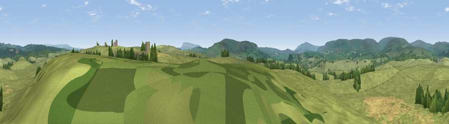

Viewpoint near Slaidburn
#22852 in England · top 64% of its area beats it · near Slaidburn · footpathWhere it is
The exact computed spot (SD 73225 53225). Click the marker for map links.
Public access: a public right of way passes within 12 m of this spot. Computed from Natural England's CRoW access layer and OpenStreetMap rights of way — not the legal definitive map. Always verify locally.
The view, rendered

A 360° render of this exact spot computed from the terrain model, tree cover and land cover — summer colours, afternoon light, calibrated against photographs of famous viewpoints. Real trees, hedges and buildings will differ in detail.
The panorama
Grey silhouette: terrain skyline in each direction (720 bearings, Earth curvature and refraction included). Dashed green: skyline with trees (+15 m) and buildings (+8 m) as obstacles. Blue strip: how far the ground is visible on each bearing.
Where the view opens
Wedge length = distance to the farthest visible ground on that bearing (vegetation-aware). Rings at 10, 25 and 50 km.
What fills the view
87% grassland · 8% woodland · 5% cropland
Angular shares of the visible panorama (visual magnitude), not map area. Landscape diversity 0.22 (0–1 Shannon).
Key numbers
More beautiful places nearby
The staircase of upgrades: each row has a higher view potential than everything closer. Driving times are estimates from straight-line distance, calibrated against real road routing — check an actual route before setting out.
| Place | Direction | Drive | Score |
|---|---|---|---|
| Viewpoint near Slaidburn | ENE · 1 km | ~3 min | 51.5 |
| Viewpoint near Slaidburn | SE · 2 km | ~5 min | 59.8 |
| Viewpoint near Tosside | E · 3 km | ~7 min | 64.0 |
| Viewpoint near Tosside | E · 3 km | ~8 min | 66.2 |
| Viewpoint near Newton | SSW · 4 km | ~9 min | 69.2 |
| Viewpoint near Slaidburn | NW · 6 km | ~12 min | 70.4 |
| Whelpstone Crag | NNE · 7 km | ~14 min | 71.7 |
| Viewpoint c9206_7443 | N · 7 km | ~15 min | 72.3 |
53.97439, -2.40970 · source: screening · position refined by local search. Computed location — check access rights before visiting.